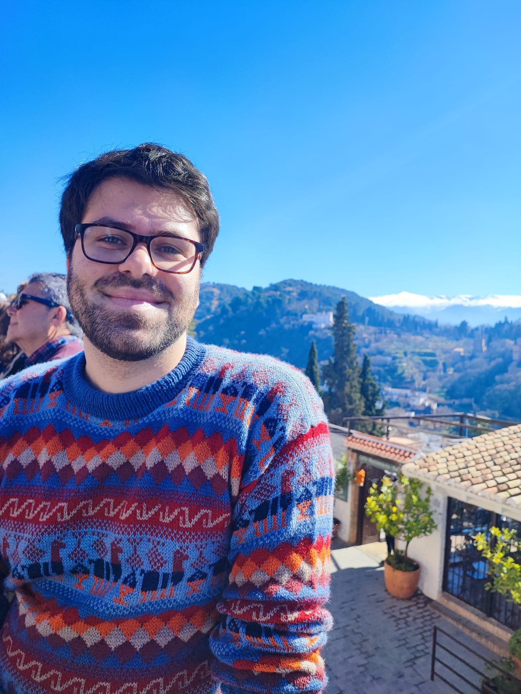

Astrophysicist · Postdoctoral Associate @ MIT Kavli Institute
Hi! I'm Alberto Traina, an astrophysicist and postdoctoral associate at the MIT Kavli Institute for Astrophysics and Space Research.
My research focuses on galaxy evolution and the co-evolution between galaxies and their supermassive black holes, combining multiwavelength observations from the millimeter to the X-ray regime.
Here you can find an overview of my research, publications, and professional activities.
Investigating how galaxies and their central supermassive black holes co-evolve in dense cosmic environments.
Studying the dust-obscured phases of galaxy evolution through multiwavelength observations.
Characterizing obscured AGN populations and their role in galaxy growth.
A collection of my scientific papers, including studies on galaxy evolution, AGN, and multiwavelength surveys.
Postdoctoral Associate
2026 - Present
Postdoctoral Researcher
2024 - 2026
PhD in Astrophysics
2020 - 2024
Email: atraina1@mit.edu